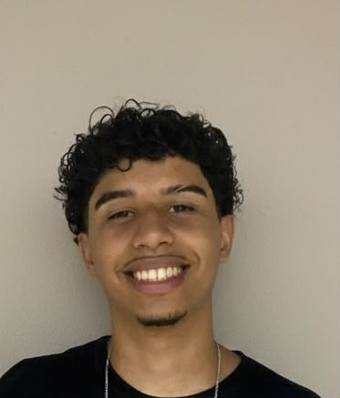

UM POUCO SOBRE MIM
Quem sou eu?

Sou estudante de Análise e Desenvolvimento de Sistemas, apaixonado por tecnologia e sempre em busca de aprender novas ferramentas e desenvolver minhas habilidades. Tenho interesse em áreas como desenvolvimento de software, infraestrutura e suporte de TI, e estou em constante evolução por meio de estudos. Busco minha primeira oportunidade na área de tecnologia, onde possa aplicar meus conhecimentos, adquirir experiência e contribuir com dedicação, responsabilidade e vontade de aprender. Acredito que a evolução profissional acontece com curiosidade, comprometimento e aprendizado contínuo, e estou preparado para enfrentar novos desafios e crescer junto com a equipe.
Formação Acadêmica
- Tecnólogo em Análise e Desenvolvimento de Sistemas | Centro Universitário Padre Anchieta (Cursando, Previsão De Conclusão: 2028)
- Técnico em Recursos Humanos | ITB/FIEB (Conclusão: 2025)
- Diversos Cursos Extracurriculares Em TI, lógica de programação e desenvolvimento web (Senai, Fundação Bradesco, FGV)
Habilidades Técnicas
HTML
CSS
Git e GitHub
Objetivo
Busco uma oportunidade na área de tecnologia, como estagiário ou profissional júnior, onde possa aplicar meus conhecimentos, adquirir experiência e continuar evoluindo como desenvolvedor.